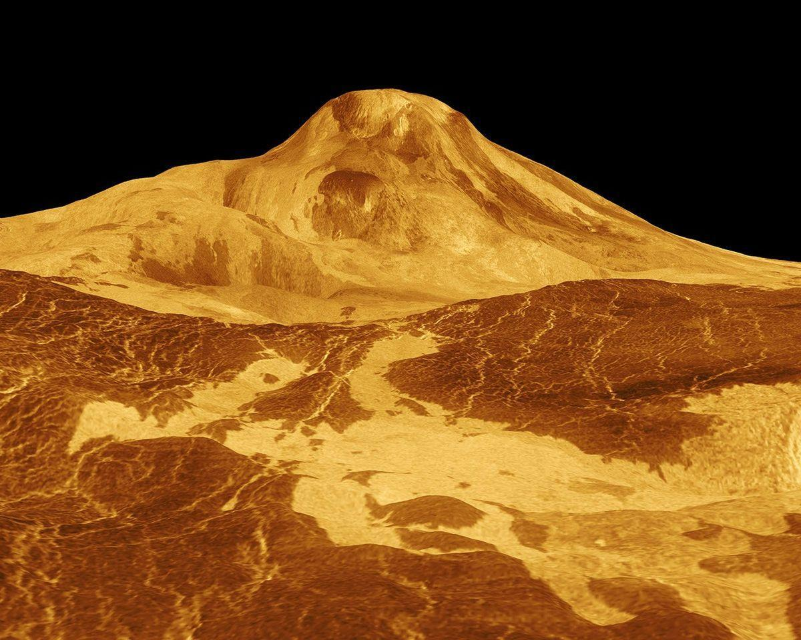

Venus is the second planet from the Sun, and Earth's closest planetary neighbor. Venus is the third brightest object in the sky after the Sun and Moon. Venus spins slowly in the opposite direction from most planets.
Venus is similar in structure and size to Earth, and is sometimes called Earth's evil twin. Its thick atmosphere traps heat in a runaway greenhouse effect, making it the hottest planet in our solar system with surface temperatures hot enough to melt lead — about 872 degrees Fahrenheit (467 Celsius). And the atmospheric pressure at the surface is about 93 times what it is at sea level on Earth. Below Venus' dense, persistent clouds, the surface has volcanoes and deformed mountains.
Venus orbits the Sun from an average distance of 67 million miles (108 million kilometers), or 0.72 astronomical units (1 astronomical unit, abbreviated AU, is the distance from the Sun to Earth). Sunlight takes about six minutes to travel from the Sun to Venus, compared to about eight minutes for the Sun and Earth.
Earth's nearness to Venus is a matter of perspective. The planet is nearly as big around as Earth. Its diameter at its equator is about 7,521 miles (12,104 kilometers), versus 7,926 miles (12,756 kilometers) for Earth. From Earth, Venus is the brightest object in the night sky after our own Moon. The ancients, therefore, gave it great importance in their cultures, even thinking it was two objects: a morning star and an evening star. That's where the trick of perspective comes in.
Because Venus' orbit is closer to the Sun than ours, the two of them — from our viewpoint — never stray far from each other. The ancient Egyptians and Greeks saw Venus in two guises: first in one orbital position (seen in the morning), then another (your “evening” Venus), just at different times of the year. At its nearest to Earth, Venus is about 24 million miles away (about 38 million kilometers). But most of the time the two planets are farther apart. The maximum distance between Venus and Earth is about 162 million miles (261 million kilometers). Mercury, the innermost planet, actually spends more time in Earth's proximity than Venus.
Spending a day on Venus would be quite a disorienting experience — that is, if your spacecraft or spacesuit could protect you from the extreme heat and crushing air pressure. For one thing, your “day” would be 243 Earth days long — longer even than a Venus year (one trip around the Sun), which takes only 225 Earth days. For another, because of the planet's extremely slow rotation, sunrise to sunset would take 117 Earth days. And by the way, the Sun would rise in the west and set in the east, because Venus spins backward compared to Earth.
If we could slice Venus and Earth in half, pole to pole, and place them side by side, they would look remarkably similar. Each planet has an iron core enveloped by a hot-rock mantle; the thinnest of skins forms a rocky, exterior crust. On both planets, this thin skin changes form and sometimes erupts into volcanoes in response to the ebb and flow of heat and pressure deep beneath.
Venus is the hottest planet in our solar system, with surface temperatures about 872 degrees Fahrenheit (467 Celsius). And atmospheric pressure at the surface squeezes with the same force as being more than 3,000 feet underwater on Earth (930 meters). The Soviet Union sent a series of probes to Venus between 1961 and 1984 as part of its Venera program (Venera is Russian for Venus). Ten probes made it to the surface, and a few functioned briefly after landing. The longest survivor lasted two hours; the shortest, 23 minutes. Photos they snapped before the landers cooked show a barren, dim, and rocky landscape, and a sky that is likely some shade of sulfur yellow.
Volcanoes and tectonic forces appear to have erased most traces of the early surface of Venus. Newer computer models indicate the resurfacing may have happened piecemeal over an extended period of time. The average age of surface features could be as young as 150 million years, with some older surfaces mixed in.
Venus has valleys and high mountains dotted with thousands of volcanoes. Its surface features — most named for both real and mythical women — include Ishtar Terra, a rocky, highland area around the size of Australia nearthe north pole, and an even larger, South-America-sized region called Aphrodite Terra that stretches acrossthe equator. One mountain reaches 36,000 feet (11 kilometers), higher than Mt. Everest. Notably, except for Earth, Venus has by farthe fewest impact craters of any rocky planet.
